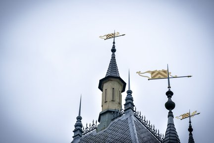
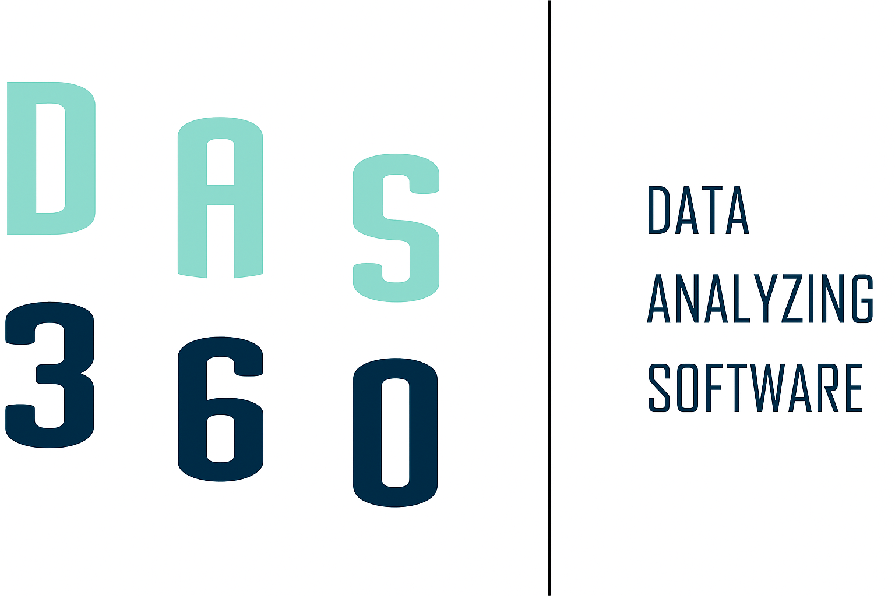
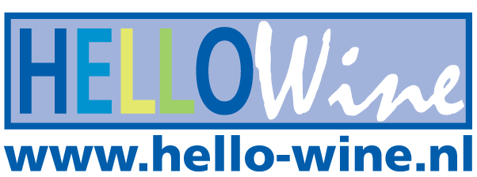

Samenwerken aan projecten
Van brainstormen tot ontwikkelen: ik werk graag samen met anderen om creatieve ideeën om te zetten in realiteit.
Ontdek een wereld vol magie en avontuur!
Ik ben een 18-jarige student softwareontwikkeling met een sterke interesse in webdesign en het bouwen van digitale ervaringen. Wat mij aantrekt in dit vakgebied is de combinatie van creativiteit en techniek: het moment waarop een idee verandert in iets dat mensen daadwerkelijk kunnen zien, voelen en gebruiken.
Voor mij is een website veel meer dan alleen functionele code. Geïnspireerd door de Efteling geloof ik dat een goede website draait om sfeer, beleving en oog voor detail. Net als in een goed ontworpen attractie moet alles kloppen: van de eerste indruk tot de kleinste interactie.
Tijdens mijn opleiding en in mijn vrije tijd werk ik met HTML, CSS en JavaScript aan moderne, responsive websites. Ik besteed veel aandacht aan structuur, visuele balans en gebruiksvriendelijkheid, zodat een website niet alleen mooi is, maar ook logisch en prettig aanvoelt voor de gebruiker.
Ik blijf mezelf continu ontwikkelen door te experimenteren met nieuwe technieken, layouts en animaties. Door feedback te verwerken en mijn werk steeds opnieuw te verbeteren, groei ik zowel technisch als creatief binnen de wereld van webdesign en development.
Mijn doel is om websites te maken die niet alleen werken, maar ook een verhaal vertellen en een blijvende indruk achterlaten.
Lees meer over mijOntdek de betoverende webites en magische avonturen die ik te bieden heb. Van spectaculaire code tot sprookjesachtige ervaringen!
Wandel door het beroemde Sprookjesbos en beleef klassieke sprookjes tot leven komen.
Ervaar spannende attracties vol magie en snelheid, perfect voor durfallen van alle leeftijden.
Laat je betoveren door spectaculaire shows en interactieve ervaringen vol fantasie.
Laat je betoveren door spectaculaire shows en interactieve ervaringen vol fantasie.
Wandel door het beroemde Sprookjesbos en beleef klassieke sprookjes tot leven komen.
Laat je betoveren door spectaculaire shows en interactieve ervaringen vol fantasie.
Ik vind het geweldig om samen te werken en ideeën tot leven te brengen. Hier zijn een paar manieren waarop ik interactie heb met anderen:
Van brainstormen tot ontwikkelen: ik werk graag samen met anderen om creatieve ideeën om te zetten in realiteit.
.jpg)
Door open te staan voor feedback kan ik mijn projecten verbeteren en nieuwe vaardigheden leren.
Het mooiste is de interactie met anderen: samen beleven, lachen en creëren maakt alles magisch.
.png)
Heb je een wens, groet of magische gedachte? Laat het ons weten en wij zorgen dat het betoverend aankomt!